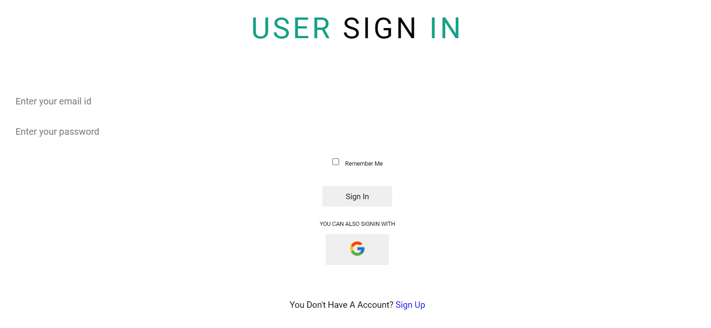
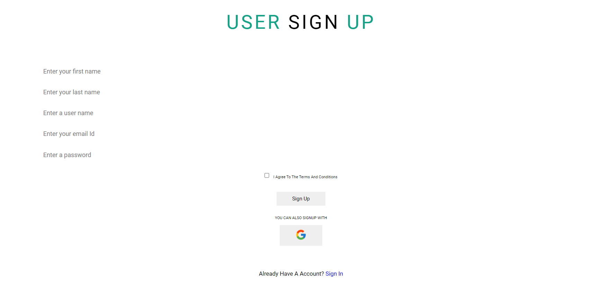
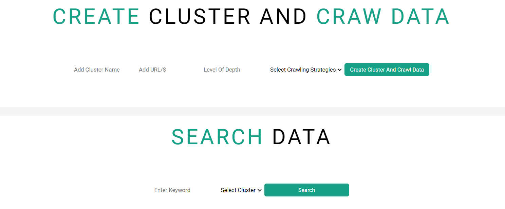
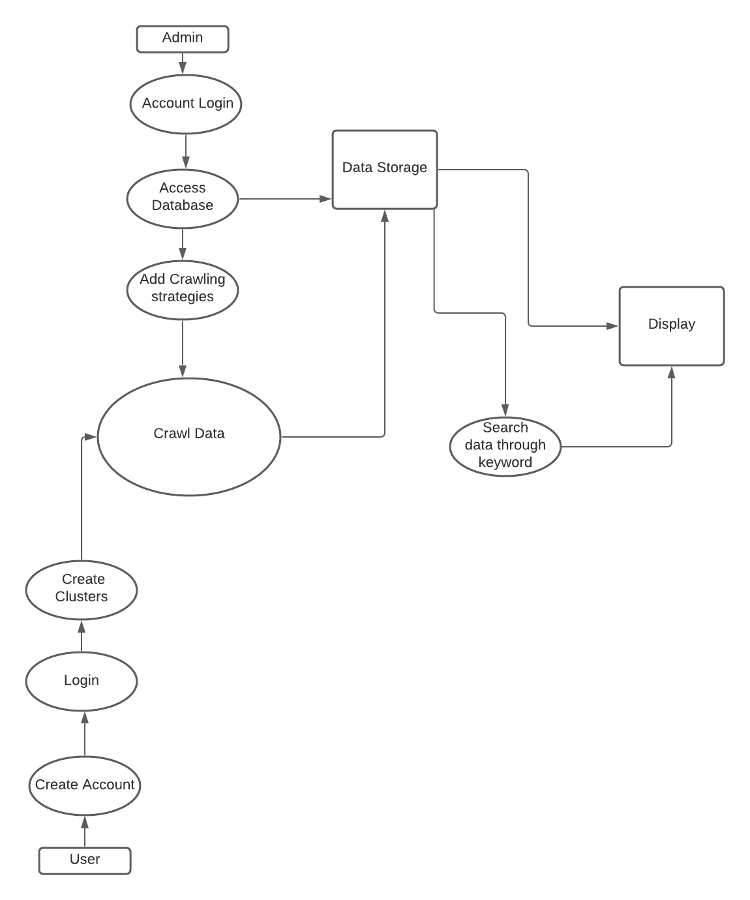

Software Requirement Specification
For
Data Crawler
Prepared by
Md. Hasibur Rahman
Sumaiya Khan
Joyanta Bhattacharjee
16/11/2021
Table of Contents
1.Introduction
1.1 Purpose
1.2 Document Conventions
1.3 Intended Audience and Reading Suggestions
1.4 Product Scope
1.5 References
2.Overall Description
2.1 Product Perspective
2.2 Product Functions
2.3 User Classes and Characteristics
2.4 Operating Environment
2.5 Design and Implementation Constraints
2.6 User Documentation
2.7 Assumptions and Dependencies
3.External Interface Requirements
3.1 User Interfaces
3.2 Hardware Interfaces
3.3 Software Interfaces
3.4 Communications Interfaces
4.System Features
4.1 System Feature 1
4.2 System Feature 2 (and so on)
5.Other Nonfunctional Requirements
5.1 Performance Requirements
5.2 Safety Requirements
5.3 Security Requirements
5.4 Software Quality Attributes
5.5 Business Rules
6.Other Requirements
Appendix A: Glossary
Appendix B: Analysis Models
1. Introduction
1.1 Purpose :
The purpose of this document Software Requirements Specification (SRS) is to
explain the specification and description of our product. In this document, we tried
to explain the features of our product so that the clients and developers can easily
understand our product and know how to change it if it is required in the future.
1.2 Document Conventions :
The typographical shows in this SRS contains the standard alluded to as IEEE Std
830-1998 IEEE Recommended Practice for Software Requirements Specifications.
IEEE Computer Society, 1998.
1.3 Intended Audience and Reading Suggestions :
The intended audience for this document include the developers, project
managers, marketing staff, users, testers, documentation writers.This document will
act like a guideline for the Developers on how to run the project and also how to
maintain it as well as the guidance on how to change it if it is required. Marketing
staff will be able to use this SRS to get a clear picture about our product and what
is this all about and what they should know before their advertising campaigns.
After going through the SRS users will be able to ensure if the product meets their
requirements. This document will also help the documentation writers and project
testers to know the product better.
The whole SRS, is written into six parts.They are-
1. Introduction
2. Overall Description
3. External Interface Requirements
4. System Features
5. Other Nonfunctional Requirements
6. Other Requirements
If the readers want to know the product better, they are suggested to go through all
the parts sequentially from part one (1) to six (6).
1.4 Product Scope :
Our product will be a search cluster based product. In our product the user will be
able to create a search cluster according to their preference where the search cluster
consists of URLs and crawling strategies. Our product is similar to search engine
search, but here the URLs to be searched are controlled by the user and the contents
are scrapped and crawled according to their strategies.
1.5 References :
1.Rest API= https://idratherbewriting.com/learnapidoc/
2.Android = https://developer.android.com/docs
3.Django = https://www.djangoproject.com/
4.Apache Lucene = https://lucene.apache.org/core/documentation.html
5.MySQL = https://dev.mysql.com/doc/
6.Python = https://docs.python.org/3/
7.JavaScript = https://developer.mozilla.org/en-US/docs/Web/JavaScript
8.Java = https://docs.python.org/3/
9.HTML = https://devdocs.io/html/
2. Overall Description
2.1 Product Perspective :
The self-contained and unique product provides users a medium to search for their necessary documents on the web. In this product, users will be able to create search clusters according to their preference. Search clusters consist of URLs and crawling strategies. Some crawling strategies include: All context, PDF only, DOC only, text files only and non-HTML content. The URLs bring content by the configured strategies and make it searchable for the user Similar to a search engine, where the URLs to be searched are controlled by the user and the contents are scrapped and crawled according to their strategies.
2.2 Product Functions :
The web interference users will be able to:
• Create and account
• Log into their account
• Create Clusters and Crawl data by adding the following:
i. Cluster Name
ii. URLs
iii. Level of Depth
iv. Selecting a Crawling Strategy
• Search data through a keyword from a selected Cluster
• View snippets of content and link to the original URL source
Using the android interference users will be able to:
• Search data through keyword from a selected Cluster
2.3 User Classes and Characteristics :
The software will be used by admin and users. Users can Sign up for an account and Login. Users can create search clusters according to their preference The software requires users to Sign up and login to their account to create Search Clusters and Crawl data. Updates will take place in intervals once a cluster is created until the user deletes the cluster.
The administrator can add new crawling strategies. The administrator has control over database and functions. The administrator is responsible for product maintenance, server management, security management and system updates.
The program can be accessed by both web and mobile app by any user who has an account.
2.4 Operating Environment :
• Website: Any GUI system with a web browser
• Mobile app: Operating system with Android 6 or above
2.5 Design and Implementation Constraints :
The system’s designed is based on Django web framework and Java for Android(both very flexible). REST API is used to connect with any platforms. One of the most popular applications for MySQL database management, phpMyAdmin, is used here. The product will be unusable if an internet connection is not used since it is a necessity for both mobile application and web interference. A list of other limits include:
i. hardware limitations
ii. specialized technology
iii. security concerns
2.6 User Documentation :
The system is designed to be informative and user-friendly. For any further questions, the user can look into user manual and video tutorial.
2.7 Assumptions and Dependencies :
The system requires an internet connection for both mobile application and web interface. An Android smart phone is required for the voice recognition feature in the app.
3. External Interface Requirements
3.1 User Interfaces :
Our product's first priority is to have a “User Friendly” website. In our website,
when a user opens the website firstly they will be redirected to the home page where the user
is a new user they can register or else, if they have an account they can log in using their Email
and password. They can also log in and register using their Google account. There will also be
an option where admin can log in and when an admin logs in they will be redirected to the
Admin panel, where admins can manage all their works. In our product homepage, there will also be
information about the development team and also about the product. From the homepage they can go to the
cluster creation page and search page. From the search page after searching using keyword/s
they will be redirected to the search results page. Also from the homepage, a user can
have all the information about the product and developer team and contact them if needed.
The following figures illustrate examples for a possible GUI of our product :
User Sign in :

User Sign up :

Search Cluster :

3.2 Hardware Interfaces :
Not Applicable
3.3 Software Interfaces :
We require many types of software programs. We also require various platforms, framework,
Languages. They are-
1.REST API.
2.Django.
3.Android Studio.
4.MySQL Database.
5.Apache Lucene.
6.Language - JS, Java, Python, HTML.
7.OS - Android, Windows, Mac.
3.4 Communications Interfaces :
We will use Rest API for server and user communication. The android application will send the audio to Google’s Could server which was given by the user to analyze and will receive the text data which has been recognized in the audio. It will also send text to receive Audio data from Google’s Text-to-speech sever. This will all be done via HTTP requests, and the audio and data transferred are encrypted by Google’s technology.
4. System Features


4.1 Signup
4.1.1 Description and Priority
Use case: Signup
Actor: Users
Precondition: Having required info for Signup
Goal: To be able to login
Overview: A user needs to signup to be able to login.
4.1.2 Stimulus/Response Sequences
| Actor actions | System response |
|---|---|
| 1. User come in the homepage and click signup | 2. They are then taken to the signup page |
| 3. They provide information accordingly and click signup | 4. They are then signed up successfully |
Alternative courses: Step 4 won't take place if user fail to provide the required information.
4.1.3 Functional Requirements
System has to be connected to database.
4.2 Login
4.2.1 Description and Priority
Use case: Login
Actor: Users, Admins
Precondition: Having required info for login
Goal: To be able to use the system
Overview: A user needs to login to be able to use the system.
4.2.2 Stimulus/Response Sequences
| Actor actions | System response |
|---|---|
| 1. User click login | 2. They are then taken to the login form |
| 3. They provide information accordingly and click login | 4. They are then logged in successfully and can use the system |
Alternative courses: Step 4 won't take place if users or admins fail to provide the required information.
4.2.3 Functional Requirements
User has to be already signed up.
System has to be connected to database.
4.3 Creating Clusters
4.3.1 Description and Priority
Use case: Create Clusters
Actor: Users
Precondition: Has to be logged in
Goal: To be able to create clusters and crawl data
Overview: Using this feature a user will be able to create clusters and crawl data.
4.3.2 Stimulus/Response Sequences
| Actor actions | System response |
|---|---|
| 1. User click create cluster | 2. They are then taken to the cluster creation form |
| 3. They provide information accordingly and click create cluster | 4. Then the system will create the cluster and crawl data |
Alternative courses: Step 4 won't take place if users do not provide the required information.
4.3.3 Functional Requirements
User has to be logged in.
System has to be connected to database.
4.4 Searching
4.4.1 Description and Priority
Use case: Search on Crawled Data
Actor: Users
Precondition: Have clusters created already
Goal: To be able to search on the user created clusters
Overview: Using this feature a user will be able to perform search on created clusters through keywords.
4.4.2 Stimulus/Response Sequences
| Actor actions | System response |
|---|---|
| 1. User click Search | 2. They are then taken to the searching form |
| 3. They provide keywords, select cluster and click search | 4. Then the system will show the search results |
Alternative courses: Step 4 won't take place if users do not provide the required information.
Step 4: System will show no results if the provided keyword/s are not found in the selected cluster
4.4.3 Functional Requirements
User has to be logged in.
System has to be connected to database.
User has to provide valid search keywords.
4.5 Export Search results
4.5.1 Description and Priority
Use case: Export Search results
Actor: Users
Precondition: Has search performed already
Goal: To be able to export search results
Overview: Using this feature a user will be able to export search results in XML format.
4.5.2 Stimulus/Response Sequences
| Actor actions | System response |
|---|---|
| 1. User click Export | 2. They are then taken to the exporting form |
| 3. They provide necessary information and click export | 4. Then the system will export the search results |
Alternative courses: Step 1-4 won't take place if users have not performed any search
Step 2-4 won't take place if users do not provide necessary information
4.5.3 Functional Requirements
User has to be logged in.
System has to be connected to database.
User has created clusters.
4.6 Adding New Crawling Strategies
4.6.1 Description and Priority
Use case: Create New Crawling Strategy
Actor: Admins
Precondition: Admin has to be logged in
Goal: To be able to add new crawling strategy
Overview: Using this feature admin will be able to implement new crawling strategies.
4.6.2 Stimulus/Response Sequences
| Actor actions | System response |
|---|---|
| 1. Admin click Add New Crawling Strategy | 2. They are then taken to the adding new crawling strategy form |
| 3. They provide necessary information and click create | 4. Then the system will be able to crawl data with the new crawling strategy |
Alternative courses: Step 4 won't take place if admin does not provide necessary information
4.6.3 Functional Requirements
System has to be connected to database.
5. Other Non Functional Requirements
5.1 Performance Requirements
The system will be able to search data efficiently. Some basic requirements of the software includes:
Response Time: The duration to perform simple task includes database access, form fill out and more.
If the internet connection is stable, accessing the database will not take more than 2 seconds.
Workload:
In case of peak workload with a lot of users, the system will be able to perform perfectly.
5.2 Safety Requirements
All the data in our system will have a proper backup of data incase of situations hampering the security. If user information is harmed, there are steps to prevent it. The actions that will be taken are:
1. The transmission of information to the database has to be secured by the addition of encryption.
2. Personal information of a user can be accessed by only respective user.
3. All the information stored in the database will be secure.
5.3 Security Requirements
The system will take necessary steps in protecting any personal information of the user. Any information required by the system will be taken by complete consent of the user. A few steps to be implemented for security requirements are listed below:
1. Users are allowed only three attempts at password before the system shuts them out. Therefore, making it difficult for hackers to guess the password.
2. Encryption will guarantee safe data transmission across apps.
3. Third parties will not have any access to user’s personal information
5.4 Software Quality Attributes
Maintainability: Clear source code and documentation is a requirement. Data backup should be possible by our system.
Portability: Any mobile device and web browser can have access to the software.
Testability: Unit tests will take place to save time and money. Unit tests catch flaws early in the development cycle and helps developer in understanding code base to make quick changes.
5.5 Business Rules
The data crawled will be updated monthly.
6.Other Requirements
Appendix A: Glossary
• OS - Operating System. A system software that manages computer hardware, software resources, and provides common services for computer programs.
• GUI - Graphical User Interface. A type of user interface through which users interact with electronic devices through visual indicator representations.
• API - Application Programming Interface. A software intermediary that allows two applications to communicate to each other.
Appendix B: Analysis Models
The data flow diagram provides user with a better understanding of how the program works:
